SOCIAL CREATIVE RESEARCH · 2026-10-21
Higgsfield 的调性，
具体由哪些创作选择构成？
36 个封面与 36 条视频的分镜抽样：从视觉身份、人物、混合媒介、产品解释，到时长与内容系列。
核心判断：它把人物、情境、界面动效和生成结果组织成连续的解释过程。审美识别、功能理解与传播入口在同一条内容里互相接续。
研究边界这是带原帖和分镜证据的视觉研究，不是 36 条有声完整观看记录。已查看 36 个封面、逐条抽取开头及不同时间点的画面，并核对公开文案、时长与媒体画幅。20 分钟电影按代表时间点抽样。音乐听审未完成：当前模型输入不支持音频，即使已取得音轨，也不能可靠判断曲风、乐器、音效、配音表现或卡点质量。Remotion 未获得制作证据；报告只描述可观察的动效组织。画面中的产品能力与效果数字视为广告主张，未经独立验证。
36封面与独立视频样本
49.4 秒35 条非长篇电影的时长中位数
12 / 35不足 30 秒
30 : 6横向 : 竖向媒体画幅
先看 36 个封面
这里保留原始封面，编号对应下方样本。观察字标、人物轮廓、品牌色出现的位置，以及各系列采用的不同美术语言。
16 个可追溯的观察
01 · 颜色有分工，品牌色会进入故事里的物件
荧光黄绿反复承担按钮、强调字、图标和身份物件的职责；黑白大底保证可读性，玫红/紫色常用于结果、变化、第二层强调。但黑金电影节、银灰时尚片保留自己的色彩语言。值得学的是同一颜色在多条片子里承担相似职责，而非把所有背景涂成品牌色。
证据：样本 19 样本 20 样本 23 样本 31 样本 3402 · 封面与首帧是分别设计的两张图
Ad Multiplier 的白底人物与卡片封面，对应的首段却是客厅跑步机跌倒；Genjutsu API 的摩托车人物封面，对应字动效正片。封面负责在网格中清楚标记主题、角色和系列；开头负责发生一件值得停留的事。36 个封面统一竖向组织，36 条素材中 30 条横向、6 条竖向，平台里能见到横片黑边。这里统计的是取得的媒体画幅，不是对其移动端表现的推断。
证据：样本 17 样本 2003 · 功能名被设计成一个个系列字标
Katana 的金属感锐角字、AI Influencer 的倾斜粗体黑色标签、Academy 的复古节目招牌，形成不同内容家族；Higgsfield 母品牌标记又反复出现。字形、字标和人物群像共同让同一系列能够被快速辨认。
证据：样本 02 样本 03 样本 08 样本 12 样本 1904 · 功能解释通过三种画面接力
人物情境让观众理解需求；UI、选择框、滑块和数据图解释因果；生成结果让能力可见。Ad Multiplier 在 9–18 秒从客厅人物进入白底人物与参考/结果卡片，26–35 秒再用点击率曲线说明换 Hook 的意义。这些曲线是广告中的示意，不能当成实际测试结果。
证据：样本 20 样本 23 样本 3105 · 真人外观的讲解者也会成为演示对象
街头讲解者自己换头发、换服装、进入趋势片段；Academy 主持人在片场变装、面对特效；厨房女性提出编辑需求之后继续生活。人的动作与功能主题有关，讲解不会因为切进效果而失去主角。单凭外观不能确认哪些镜头是真人拍摄。
证据：样本 08 样本 09 样本 21 样本 3106 · “丝滑”首先来自对象和动作的延续
红色敞篷车与乘客在写实、动漫、黏土、涂鸦之间持续存在；Restyle 中输入与输出保留同一姿态；房间编辑片保留人物、机位和空间关系。观众始终知道变化发生在谁身上，所以复杂变化仍易于追踪。具体缓动曲线和制作软件无法只凭分镜确定。
证据：样本 05 样本 28 样本 3007 · AI 人物的识别点被刻意放大
金色锅盖头、极长黑发、卷胡须、肌肉轮廓、紫发与服装颜色为人物提供剪影级识别。多位角色跨发布、演示、短剧出现，构成可继续使用的角色资源。漂亮只是人物的一种用途，稀奇、喜剧和可记忆同样重要。
证据：样本 03 样本 12 样本 19 样本 2608 · 不同内容任务对应不同的人物造型
时尚眼镜片用冷感短发和银色服装；厨房创意工作者用短发、针织纹理与自然光；教程用眼镜、条纹衣、画稿和模型；Academy 用西装、小胡须、眼镜和演播室。身份由人物、服装、空间和道具同时表达。
证据：样本 06 样本 08 样本 25 样本 31 样本 3609 · 真实感需要周围世界一起成立
派对路人、车内乘客、餐厅空间、自然窗光、碎发、皮肤纹理、衣物褶皱和材质反光共同支持人物。厨房女性特写保留鼻部高光、腮红、碎发和粗针织；月球广告用金属、镜片、面部和空间的光线关系建立统一感。抽样不能保证全片不存在手部、口型或连续性瑕疵。
证据：样本 03 样本 06 样本 23 样本 3110 · 产品样片挑选了能显出功能差别的对象
Upscaler 用脸部和鼻尖飞蛾提供细节；Restyle 保留动作做对应；局部图像编辑用固定机位房间；语音功能用嘴唇与面部近景配情绪脚本。这些选择使观众知道应该看哪里，功能差异不必全靠宣称。
证据：样本 10 样本 28 样本 30 样本 3211 · 画面中的“对照”降低理解负担
Input/Result 双卡、上下分屏、斜向分割线、预演/成片对应，分别解决不同问题。Animation Pipeline 的低保真 Blender 预演尤其有价值：它在最终效果之前留下可检查的中间步骤，比只给漂亮结果更能说明制作方法。
证据：样本 04 样本 10 样本 20 样本 30 样本 3612 · 多个实例被组织为一个可见的规模
卡片阵列、环绕手机、批量广告和并列结果，把多种变化放进一个画面。它们同时传递覆盖面和产量。数量展示不等于质量、转化率或真实生成速度，需要与真正的单个结果分开评价。
证据：样本 17 样本 20 样本 23 样本 3313 · 开场优先建立事件，产品字标常在事件之后出现
掰手腕、跑步机跌倒、悬崖舞剑、飞蛾停鼻尖、猩猩按按钮先给视觉事件；不少样本再于约 2–9 秒出现产品名。也存在 UI 或字动效直接开场，因此它是反复出现的方法，不是每条都相同的硬规则。
证据：样本 02 样本 07 样本 10 样本 20 样本 2614 · 同一个功能可以有多种内容入口
AI Influencer 至少出现角色/参数演示、自拍教程、发布片和两集短剧。短剧把人物一致性与多镜头关系放进作品里；教程解释实现方式；发布片讲产品。这种内容分工比持续复述一个功能更有延展性。
证据：样本 03 样本 12 样本 19 样本 21 样本 2615 · 时长服务于内容任务
排除 20 分钟电影的 35 条，中位数 49.38 秒；小于 30 秒 12 条，30–60 秒 8 条，60–90 秒 11 条，90 秒及以上 4 条。短发布片可以 14–30 秒，完整场景讲解常需要约一分钟，短剧/集锦更长。总平均值容易被电影拉偏。样本来自当前公开网格与置顶，不代表全账号历史。
证据：样本 10 样本 20 样本 22 样本 23 样本 12 样本 19 样本 0116 · 结尾与文案把不同兴趣接到不同入口
文案反复要求评论功能相关关键词；教程样本还明确引导到 YouTube、提示词或完整流程。不同关键词对应不同主题，理论上便于分别承接兴趣，但未检查私信流程，也不能从关键词评论数推出付费转化。部分视频结尾只是简短上线说明，转化细节由正文承担。
证据：样本 09 样本 20 样本 25 样本 36时长：比较任务，再比较秒数
| 时长 | 条数 | 样本范围 |
|---|
| <30 秒 | 12 | 模型/权益更新、风格展示、短教程导流等 |
| 30–<60 秒 | 8 | 功能解释、动作教程、声音功能、社群招募等 |
| 60–<90 秒 | 11 | 场景化工作流、发布/讲解、时尚广告等 |
| ≥90 秒 | 4 | 短剧、品牌叙事、电影节集锦 |
| 另列 20 分钟 | 1 | ANERNEQ，不混入短内容统计 |
35 条合计约 31.9 分钟素材；最短约 13.9 秒，最长约 147.8 秒。以上是文件时长统计，不能等同于观看留存、完播率或适合所有账号的最佳时长。
声音：已查证的部分与缺口
样本页面的音频入口都标为“原创音频”。它不能证明自行作曲、统一选曲策略或音乐版权归属。报告提供已取得的独立音轨供复核，不把“有音轨”写成“已听过”。曲风分布、鼓点、配音与音乐的强弱关系、具体音效和卡点，尚无可靠听审结论。
可以从画面确认的声音设计意图：样本 32 把嘴唇、面部极近景与轻声、笑、哭、愤怒等脚本标签并置，让情绪表达成为功能的展示对象。这里讨论的是镜头与脚本设计，未评判实际听感。
若后续有人听审，最值得对照样本 20 的跌倒/卡片/曲线三段、样本 06 的时尚叙事、样本 25/36 的讲解与步骤切换：分别核对声音是否重置注意力、是否维持同一情绪、是否为讲解让位。本段是后续检查项，不是对其音轨的事实结论。
动效工具：确认到哪一层
样本 18 的官方文案明确将视觉、转场和动效描述为用代码生成；样本 36 的官方文案公开提到 Blender 预演与 AI 动画流程。Katana 官方页面描述参考视频节奏、转场、色彩与效果的迁移。未发现能确认这些社媒内容使用 Remotion 的证据，因此可复用的是“AI 素材与可控排版/合成动效协同”的方法，不对实际软件作结论。
Katana 官方页面；各原帖见下方。
转成自己的制作方法
先给每个功能指定一个能看出差异的可见对象和动作；选一个具有身份、轮廓和生活环境的人物；写清每段画面要让观众理解什么；保持人物/动作/产品在转场中有一个不变项；最后单独设计封面，而不是默认截取第一帧。品牌色要有固定的信息职责，角色与字标要能跨多条内容继续使用。
复制高饱和色、奇怪人物和快速转场，很容易只得到热闹。真正需要复用的是：每种视觉形式都在推进同一个需求与结果之间的关系。
36 条样本与时间点
以下标题是研究标签，非逐字转载原帖标题。分镜为选点抽样，不覆盖每一帧；时间点是定位用近似值。人物身份与真人/AI 来源未仅凭外观判定。
样本 01品牌活动电影节入围片
147.75 秒 · 1276 × 718 像素（取得的版本）
黑金、月桂、信封和礼服，借用电影节的仪式感。主持人开场后变为作品集锦。
观察位置：0–7 秒颁奖情境；12 秒以后作品集锦
打开 Instagram 原帖 ↗ 展开带时间点的分镜抽样
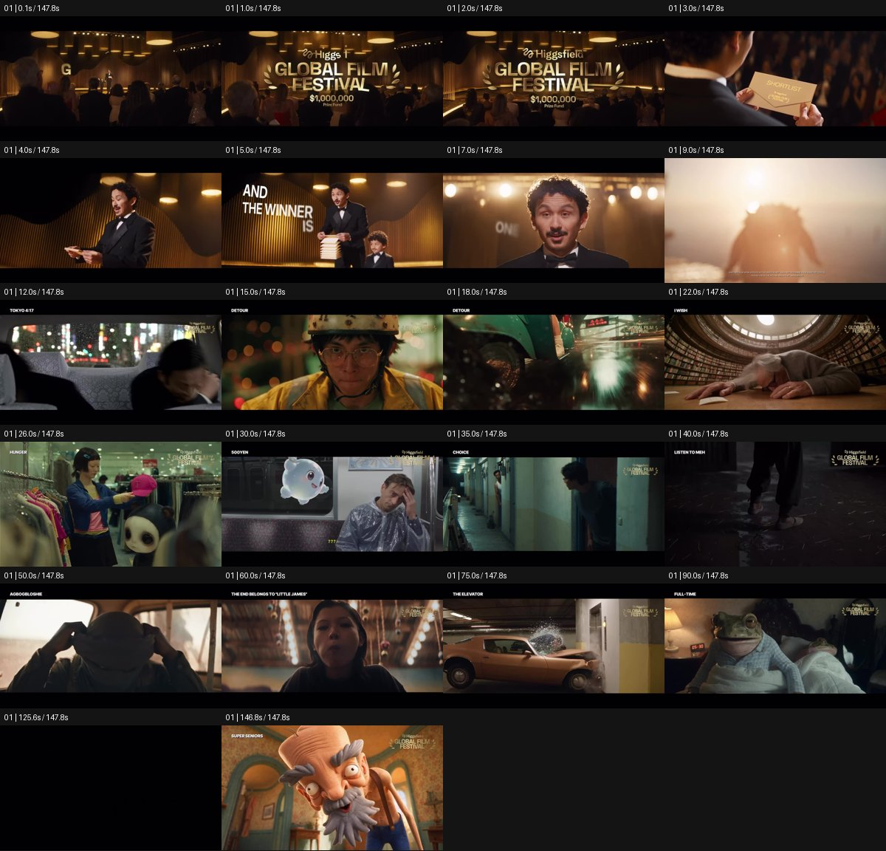
音轨供复核（未完成听审）
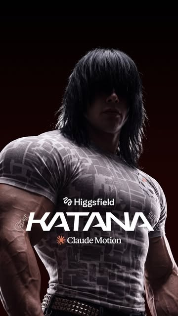
样本 02功能讲解Katana 发布
78.00 秒 · 1276 × 718 像素（取得的版本）
先用两名体型悬殊的人物掰手腕吸引注意，之后才解释连接方式、动效和剪辑能力。封面使用角色半身与独立金属字标。
观察位置：0–5 秒情节；12–18 秒界面；22–30 秒结果
打开 Instagram 原帖 ↗ 展开带时间点的分镜抽样
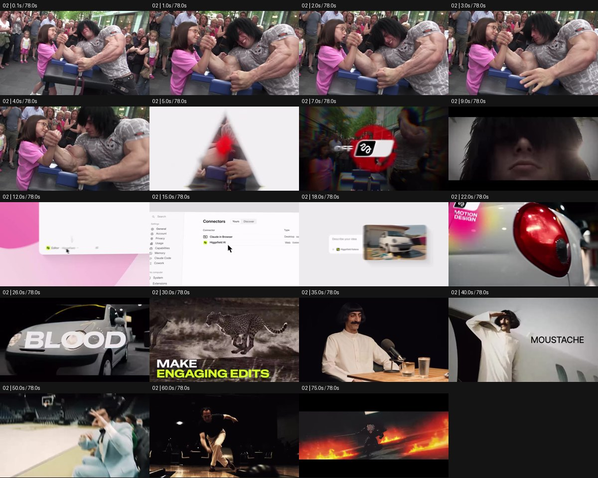
音轨供复核（未完成听审）
样本 03功能讲解AI Influencer 免费试用
49.38 秒 · 1276 × 718 像素（取得的版本）
派对开头、街头角色变换、角色参数面板和不同人物实例。人物外形刻意不寻常，生活环境与周围人增加可信度。
观察位置：0–7 秒派对；9–18 秒人物与 UI；26 秒动作迁移
打开 Instagram 原帖 ↗ 展开带时间点的分镜抽样
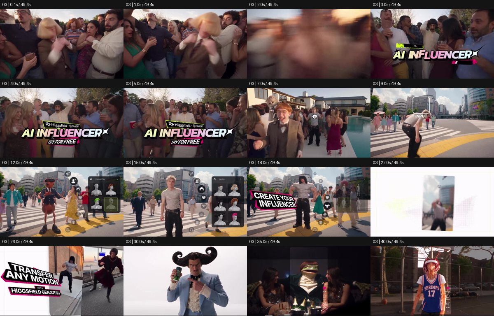
音轨供复核（未完成听审）
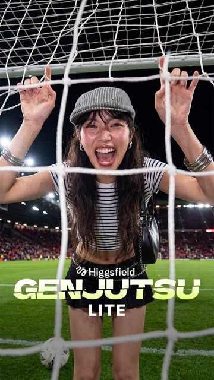
样本 04功能发布Genjutsu Lite
28.88 秒 · 1276 × 718 像素（取得的版本）
极限运动开头，接聊天气泡、用户视频卡片与输入输出对照。用蓝绿气泡组织价格信息，具有消息流的阅读感。
观察位置：0–5 秒奇观；7–9 秒聊天；12–26 秒案例及对照
打开 Instagram 原帖 ↗ 展开带时间点的分镜抽样
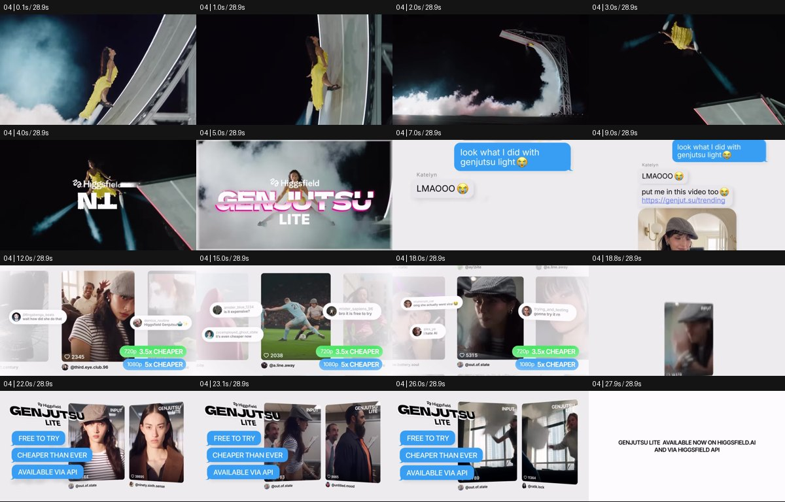
音轨供复核（未完成听审）
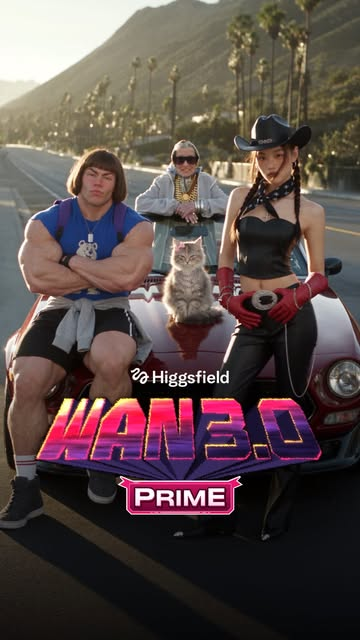
样本 05风格演示Wan 3.0 Prime
41.17 秒 · 1276 × 718 像素（取得的版本）
一组红色敞篷车、乘客与公路行动贯穿写实、混合媒介、动漫、黏土和涂鸦。固定角色与动作，让变化容易看见。
观察位置：7 秒 Mixed Media；12 秒 Anime；18 秒 Clay；26 秒 Scribble
打开 Instagram 原帖 ↗ 展开带时间点的分镜抽样
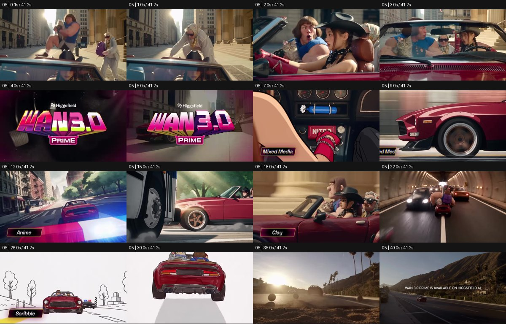
音轨供复核（未完成听审）
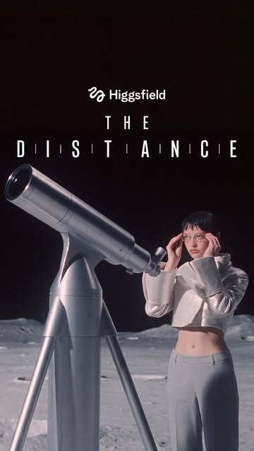
样本 06时尚叙事THE DISTANCE 眼镜广告
65.71 秒 · 1276 × 718 像素（取得的版本）
灰白银、黑底、冷调皮肤、短发与透明镜片。月球、望远镜、列车和空间距离共同服务眼镜主题。
观察位置：4–9 秒产品与人物；26 秒眼镜面部近景；30–50 秒空间叙事
打开 Instagram 原帖 ↗ 展开带时间点的分镜抽样
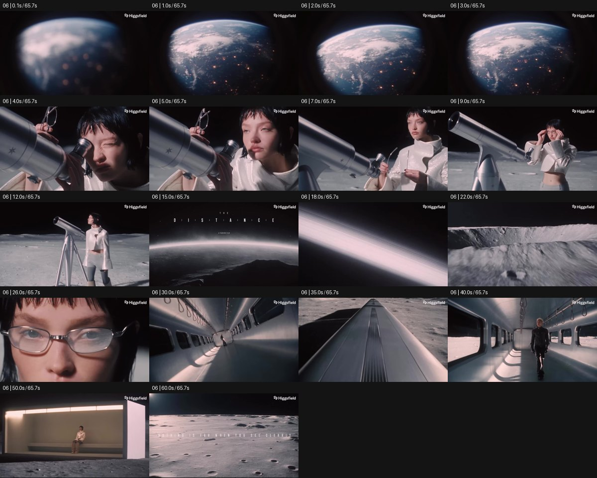
音轨供复核（未完成听审）
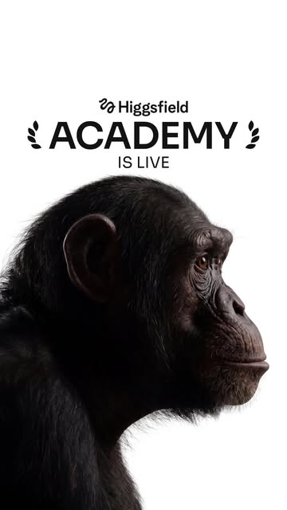
样本 07品牌叙事Academy 猴子寓言
79.58 秒 · 1276 × 718 像素（取得的版本）
白色无缝棚、一只猩猩、一个绿色按钮，把生成操作变成反复按按钮的动作笑话，再引出学习与避免低质内容。
观察位置：0–9 秒设定；12–40 秒重复与升级；60 秒可见 AI SLOP 字样
打开 Instagram 原帖 ↗ 展开带时间点的分镜抽样
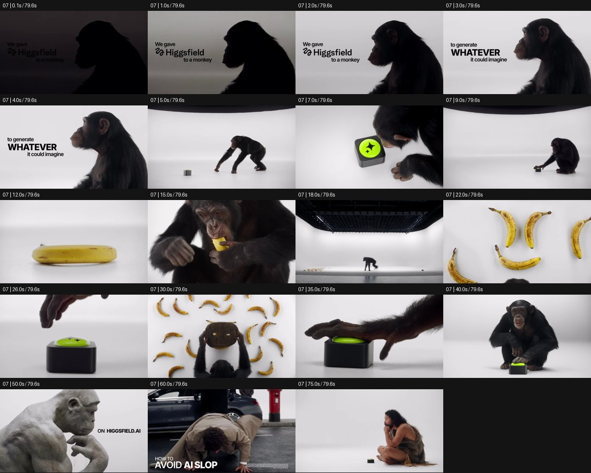
音轨供复核（未完成听审）
样本 08功能讲解Academy 主持人
76.96 秒 · 1276 × 718 像素（取得的版本）
复古电视节目式讲解：西装、眼镜、小胡须、卷发、木色演播室。主持人置身片场并参与变装和特效，UI 穿插其中。
观察位置：0–9 秒演播室；15–18 秒 UI；35–60 秒角色与片场变化
打开 Instagram 原帖 ↗ 展开带时间点的分镜抽样
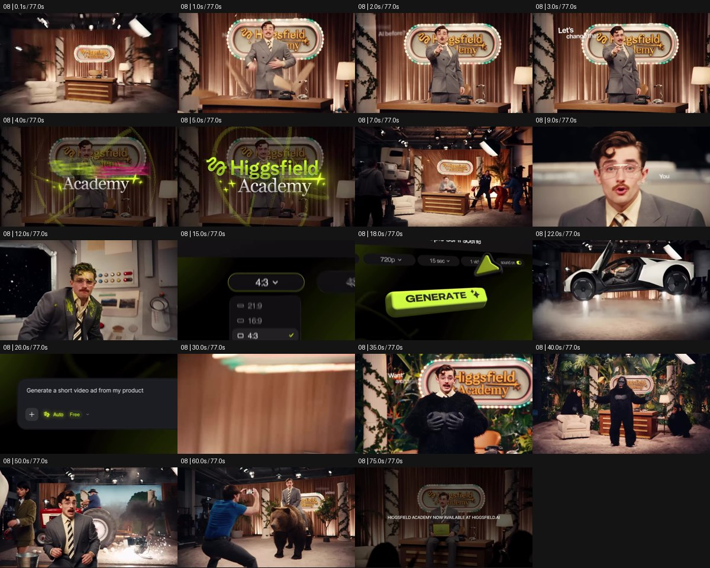
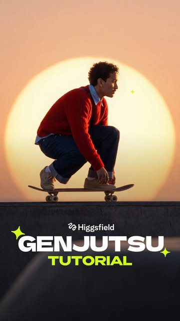
样本 09教程Genjutsu 教程
35.50 秒 · 720 × 1280 像素（取得的版本）
讲解者本人在连续场景中变换人物，再用上下对照解释动作保留、角色更换。效果直接发生在讲解者身上。
观察位置：0–4 秒换人；15–22 秒输入输出；30 秒上传界面
打开 Instagram 原帖 ↗ 展开带时间点的分镜抽样
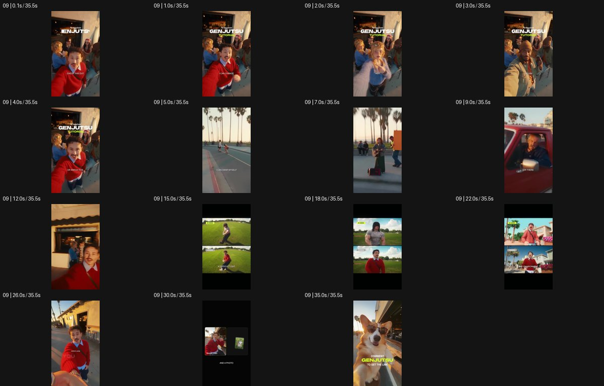
音轨供复核（未完成听审）
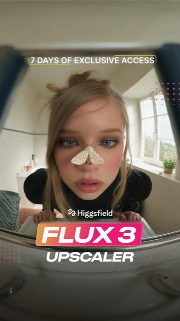
样本 10功能发布FLUX 3 Upscaler
16.50 秒 · 1276 × 718 像素（取得的版本）
以鼻尖上的飞蛾制造脸部近景，再用斜向分割线展示变化。人物、昆虫纹理与反光表面为清晰度提供观察对象。
观察位置：0–5 秒飞蛾；7–12 秒斜向比较；13–15 秒补充功能
打开 Instagram 原帖 ↗ 展开带时间点的分镜抽样
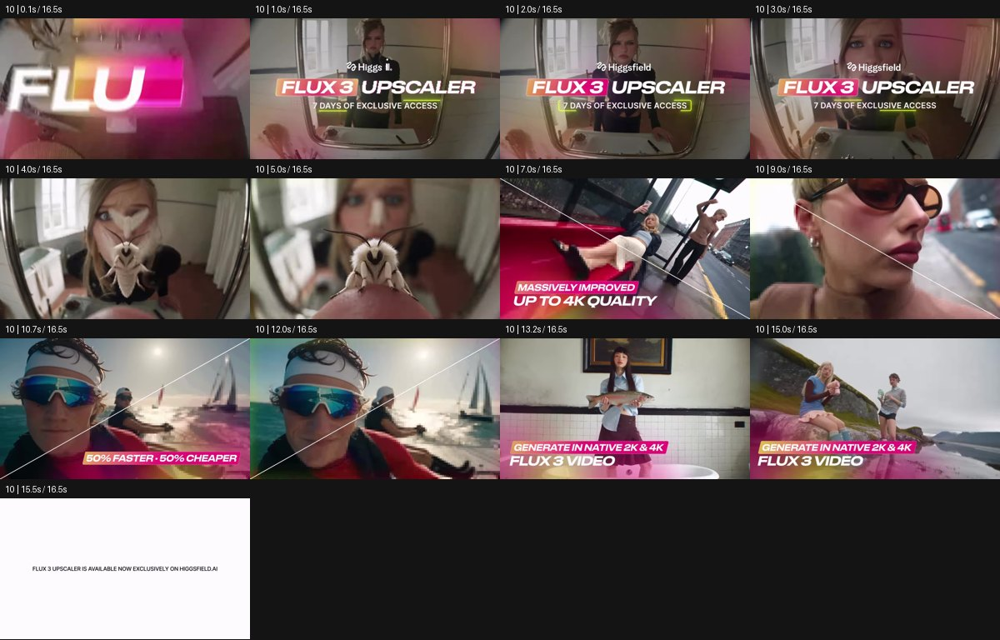
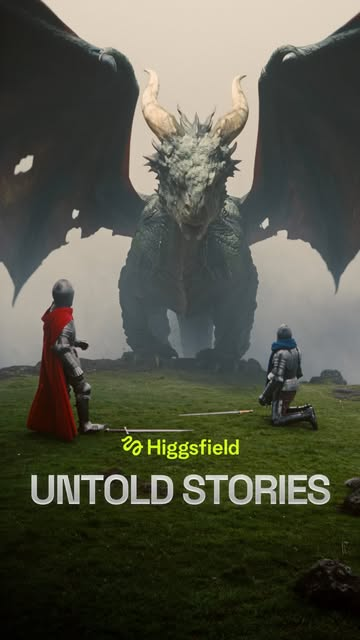
样本 11品牌叙事Untold Stories
91.58 秒 · 960 × 720 像素（取得的版本）
骑士故事、创作者在家工作的镜头、画稿与成片交替。把平台能力连接到“把自己的故事拍出来”的创作愿望。
观察位置：0–15 秒骑士；18–22 秒草稿和创作者；30 秒以后不同故事
打开 Instagram 原帖 ↗ 展开带时间点的分镜抽样
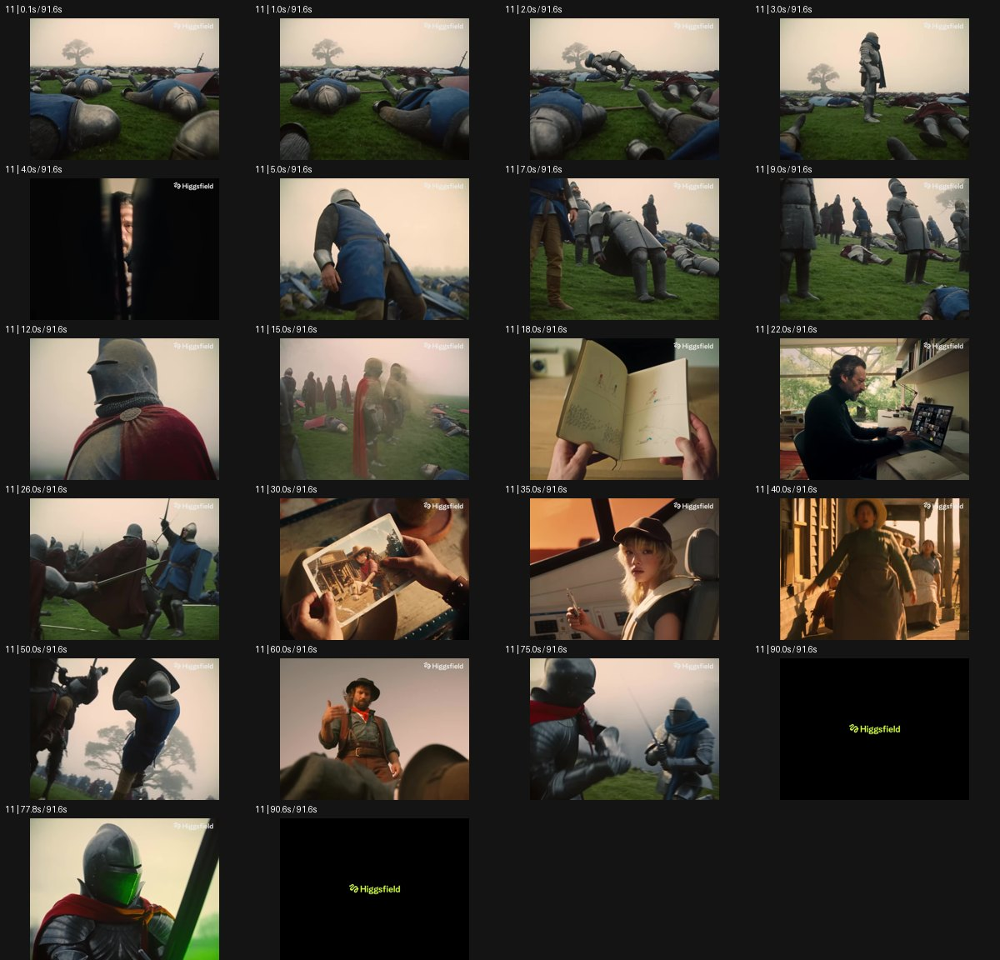
音轨供复核（未完成听审）
样本 12连续短剧AI Influencer 短剧 EP2
106.63 秒 · 960 × 720 像素（取得的版本）
延续金色锅盖头、长黑发肌肉人物、紫发女性和卷胡须角色；服装、场景、角色冲突共同维持系列识别。
观察位置：0–9 秒电梯；26–60 秒人物关系；90 秒以后夜间场景
打开 Instagram 原帖 ↗ 展开带时间点的分镜抽样
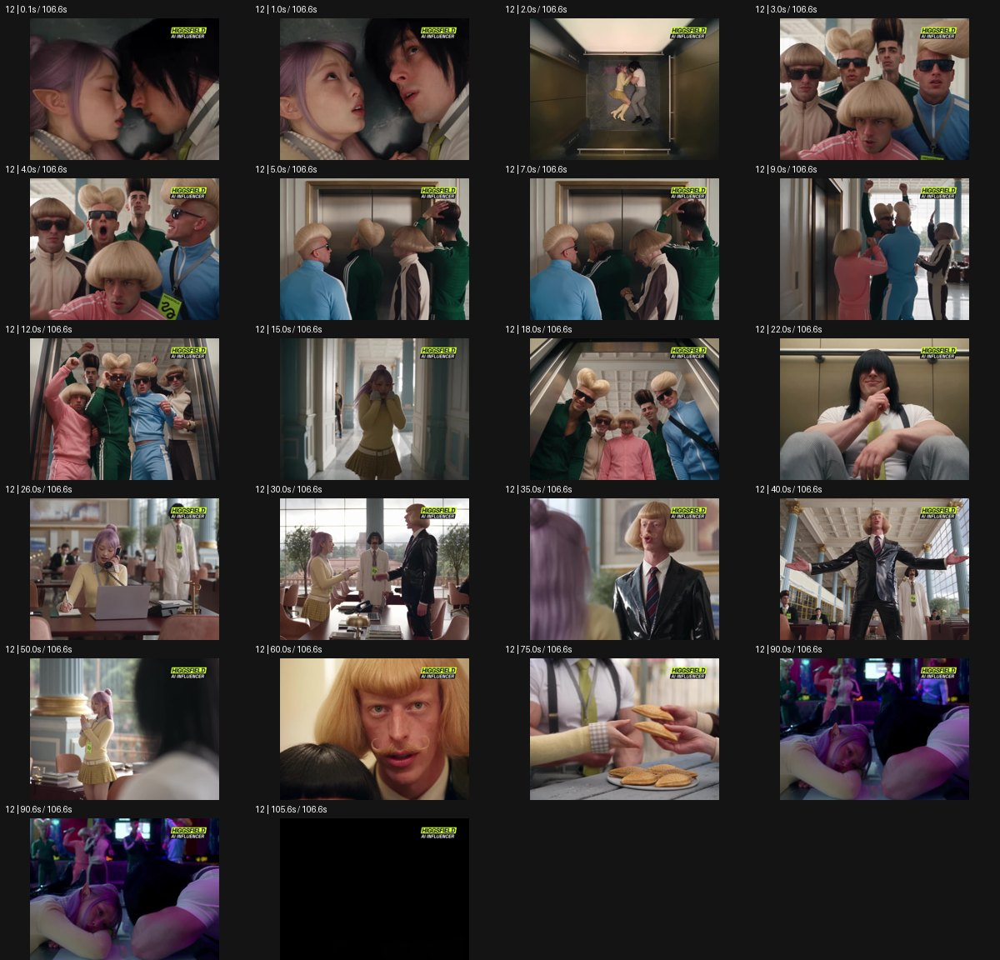
音轨供复核（未完成听审）
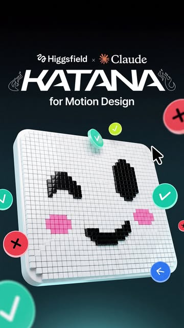
样本 13功能演示Katana Motion Design
42.57 秒 · 1276 × 718 像素（取得的版本）
先呈现对话式 brief 和渲染状态，再给出一个虚构任务管理产品的完整发布动画。像素表情、粒子、卡片环绕、脑图各解释不同概念。
观察位置：0–9 秒输入；12–35 秒 BodyTask 动画；40 秒字标收束
打开 Instagram 原帖 ↗ 展开带时间点的分镜抽样
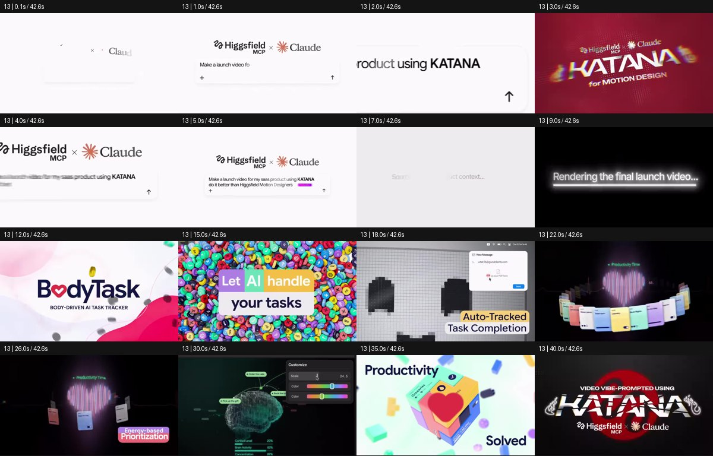
音轨供复核（未完成听审）
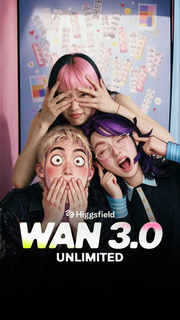
样本 14功能发布Wan 3.0 Unlimited
23.42 秒 · 1276 × 718 像素（取得的版本）
照相亭作为固定空间，人物和媒介风格切换；促销数字叠加在同一故事上，避免完全中断画面。
观察位置：3–7 秒照相亭；9 秒折扣字样；12–18 秒风格变化
打开 Instagram 原帖 ↗ 展开带时间点的分镜抽样
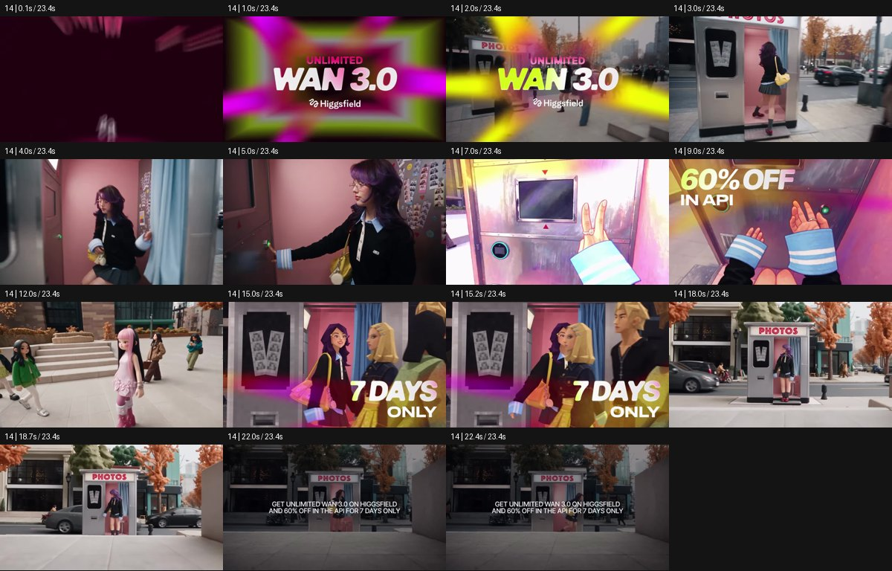
样本 15品牌合作Iman Gadzhi
15.00 秒 · 1276 × 718 像素（取得的版本）
骑马、旗帜、夜间城市与荧光色建筑投影，短时间制造“大事件”感。人名和角色身份比功能细节重要。
观察位置：0 秒旗帜；1–5 秒建筑投影；14 秒纯品牌色结尾
打开 Instagram 原帖 ↗ 展开带时间点的分镜抽样
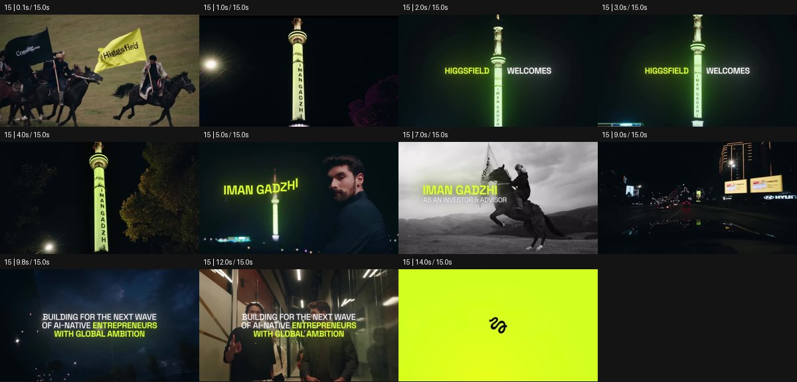
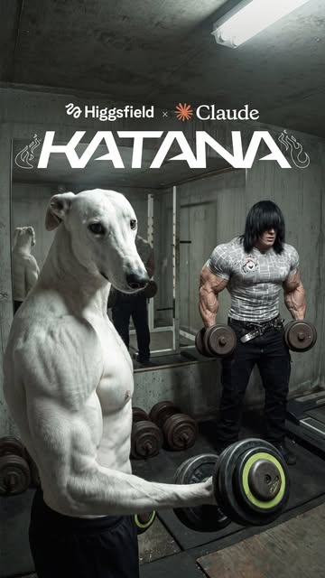
样本 16情境讲解Katana 角色替换
72.25 秒 · 1276 × 718 像素（取得的版本）
举哑铃的人物变成肌肉狗；办公室三人看屏幕、选角色、再进入替换后的片段。旁观者的反应也参与解释价值。
观察位置：0–5 秒变换；9–18 秒办公室与 UI；22 秒以后结果
打开 Instagram 原帖 ↗ 展开带时间点的分镜抽样
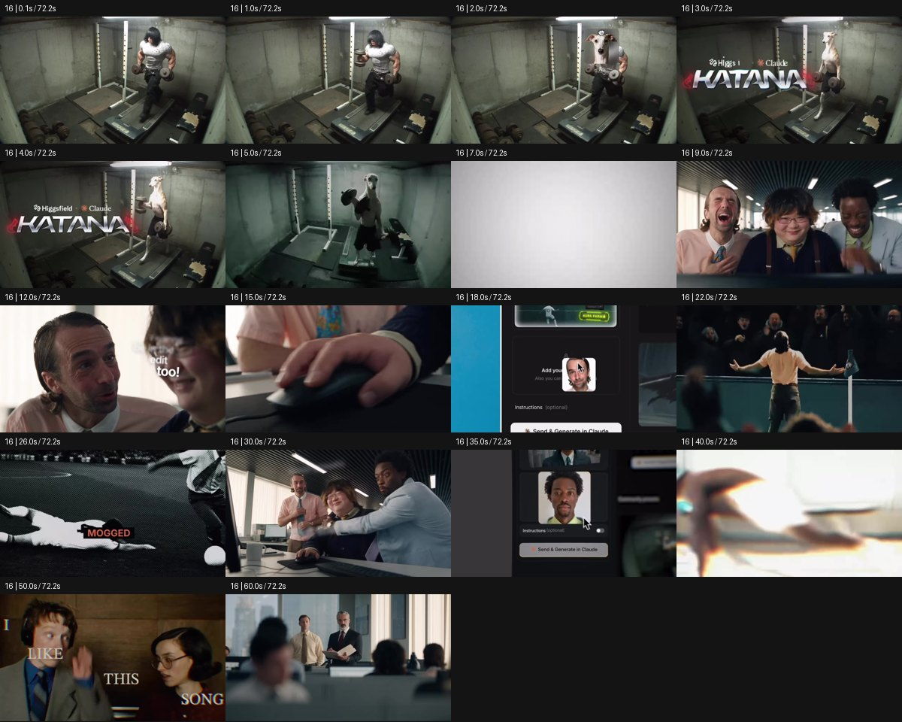
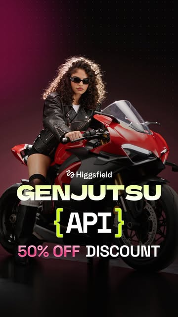
样本 17功能发布Genjutsu API
25.00 秒 · 1276 × 718 像素（取得的版本）
封面为摩托车人物，正片主体为字动效、手机阵列与参数。把 API 这种抽象对象，转成“装进你的 App”的可见结果。
观察位置：3–7 秒字与规模；15–18 秒手机和应用；20 秒计费表达
打开 Instagram 原帖 ↗ 展开带时间点的分镜抽样
音轨供复核（未完成听审）
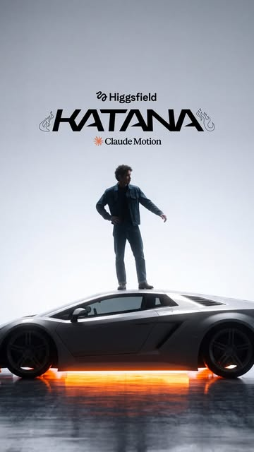
样本 18情境讲解Katana Aura / 汽车
76.08 秒 · 720 × 1280 像素（取得的版本）
暖木、窗光、卷发小胡须讲解者；讲解、拳击片段、提示词与汽车成片交替。用生活化空间承接高强度效果。
观察位置：0–18 秒人物与片段；22 秒对话；26–30 秒效果；50 秒汽车
打开 Instagram 原帖 ↗ 展开带时间点的分镜抽样
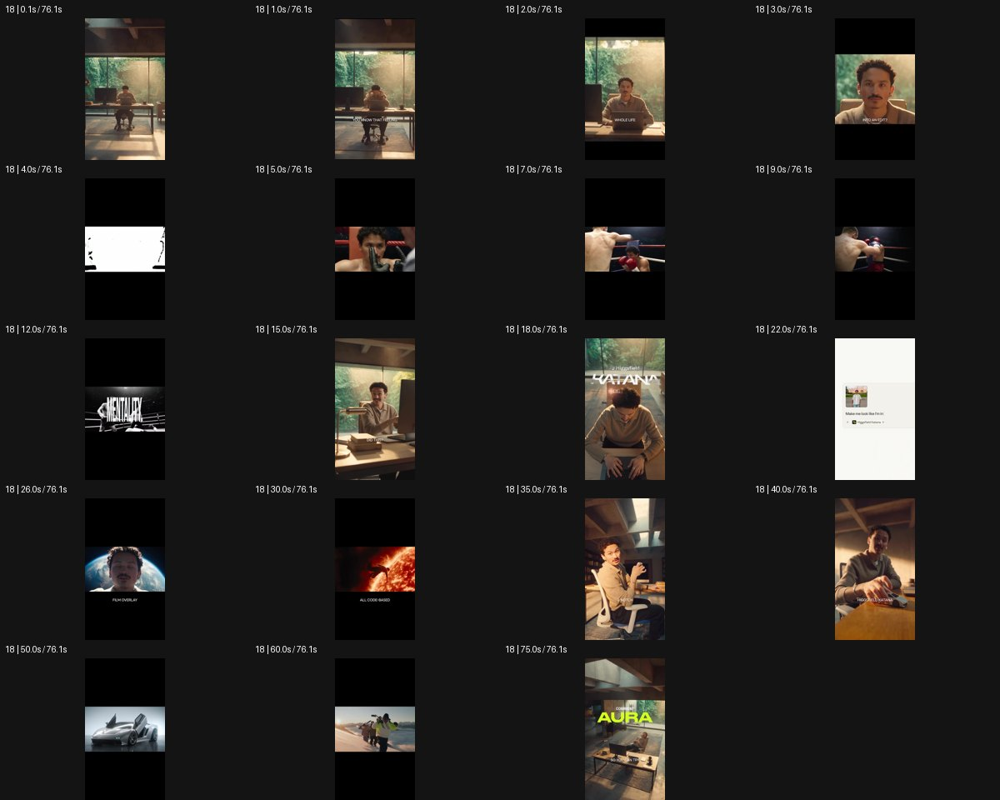
展开人物 / 界面细节
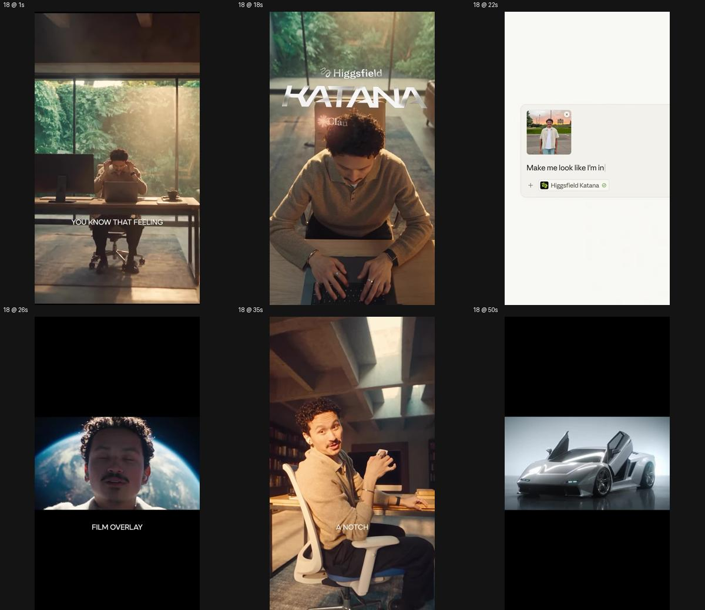
音轨供复核（未完成听审）
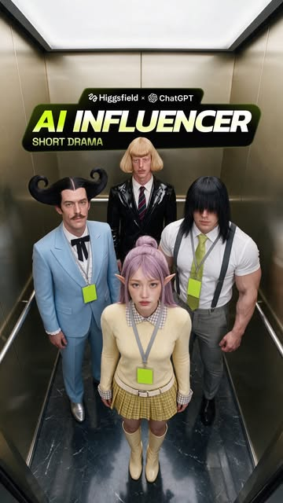
样本 19连续短剧AI Influencer 短剧 EP1
120.21 秒 · 1440 × 1080 像素（取得的版本）
电梯和办公室内展开人物关系，角色用极端发型、身材、服装轮廓区分。荧光色工牌成为场景中的品牌识别。
观察位置：0–9 秒开场冲突；12–30 秒角色群像；119 秒悬念落点
打开 Instagram 原帖 ↗ 展开带时间点的分镜抽样
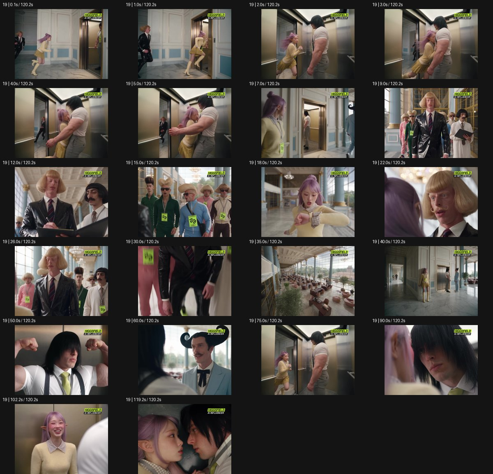
音轨供复核（未完成听审）
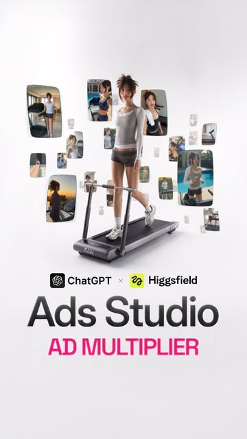
样本 20情境讲解Ads Studio Ad Multiplier
62.83 秒 · 1276 × 718 像素（取得的版本）
跑步机跌倒开头，随后切入白底人物抠像和环绕视频卡片，再用点击率曲线解释修改 Hook 的意义。卡片保留同一人物和产品情境。
观察位置：0–2 秒跌倒；9–18 秒人物与卡片；26–35 秒曲线；50 秒批量素材
打开 Instagram 原帖 ↗ 展开带时间点的分镜抽样
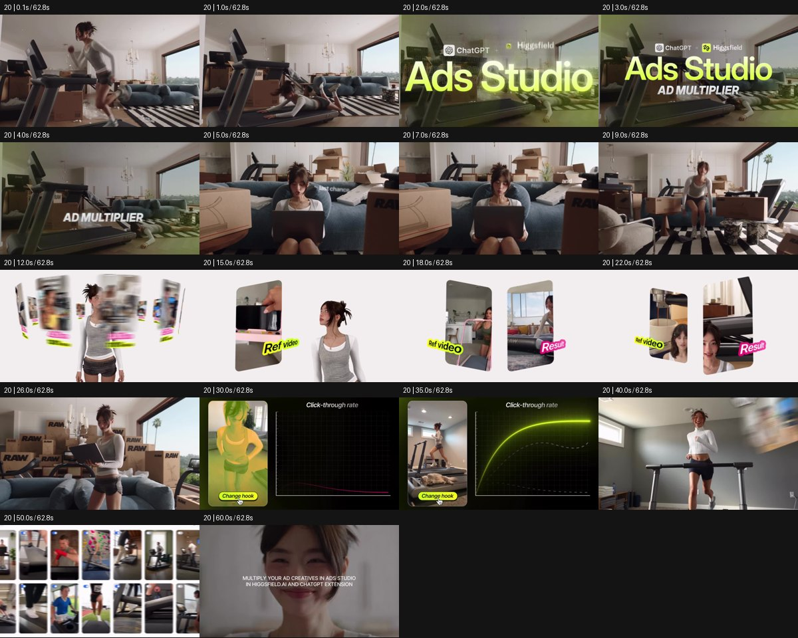
展开人物 / 界面细节
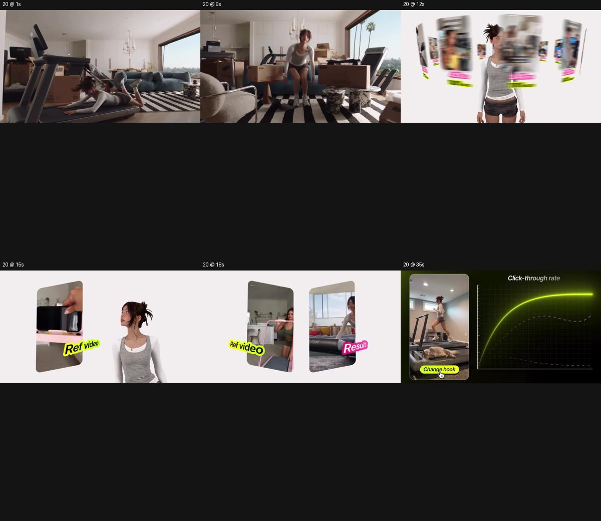
音轨供复核（未完成听审）
样本 21教程AI Influencer 街头讲解
42.03 秒 · 720 × 1280 像素（取得的版本）
车内自拍、咖啡馆插入角色、街头全身人物与发型菜单交替。讲解者也成为可编辑的对象，说明与示范同时发生。
观察位置：0–7 秒自拍；15 秒街头；26–30 秒发型/服装；35 秒结果
打开 Instagram 原帖 ↗ 展开带时间点的分镜抽样
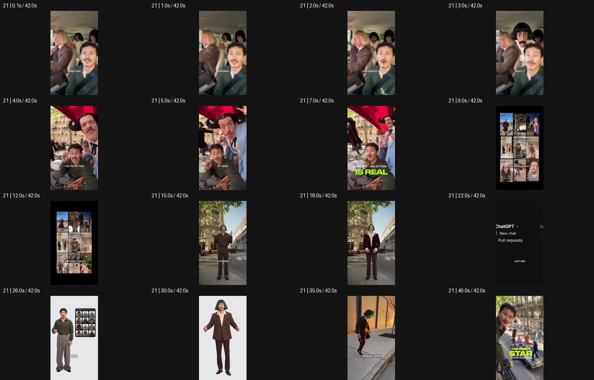
展开人物 / 界面细节
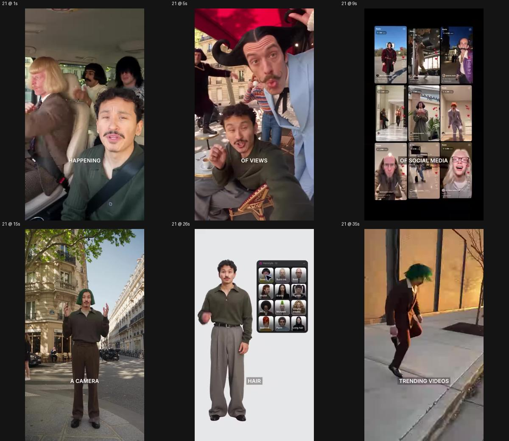
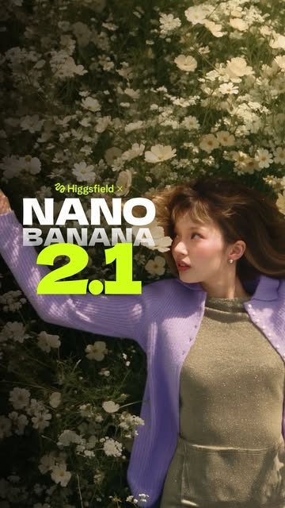
样本 22功能发布Nano Banana 2.1
13.92 秒 · 1276 × 718 像素（取得的版本）
开头是人物从高处跃下、场景变化；后段落到花丛中的女性与产品名。短发布片只建立新模型的印象，详细功能留给文案。
观察位置：0–5 秒空间变化；7–11 秒花丛人物；12 秒收束
打开 Instagram 原帖 ↗ 展开带时间点的分镜抽样
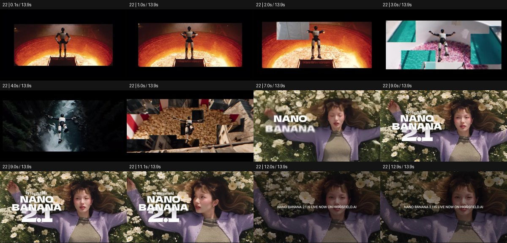
音轨供复核（未完成听审）
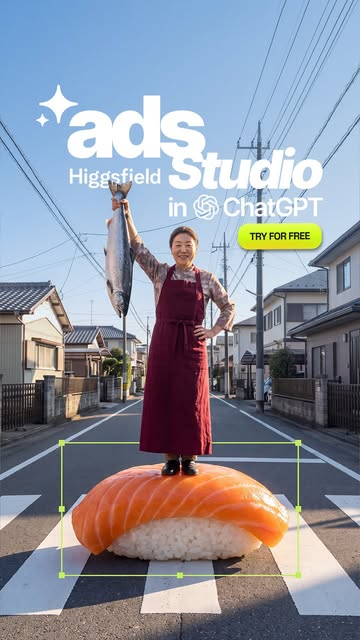
样本 23情境讲解Ads Studio 寿司店
75.17 秒 · 1276 × 718 像素（取得的版本）
鱼眼近景、寿司店两代人物、输入网址、识别品牌、选产品、设置数量与批量广告。界面被放大为一连串可读动作。
观察位置：0–9 秒店铺；12–18 秒入口；22–40 秒操作；60 秒回店铺
打开 Instagram 原帖 ↗ 展开带时间点的分镜抽样
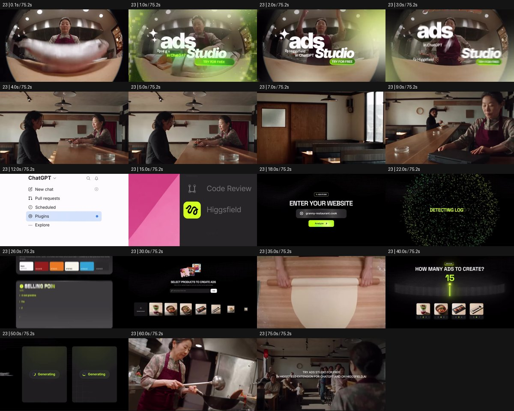
展开人物 / 界面细节
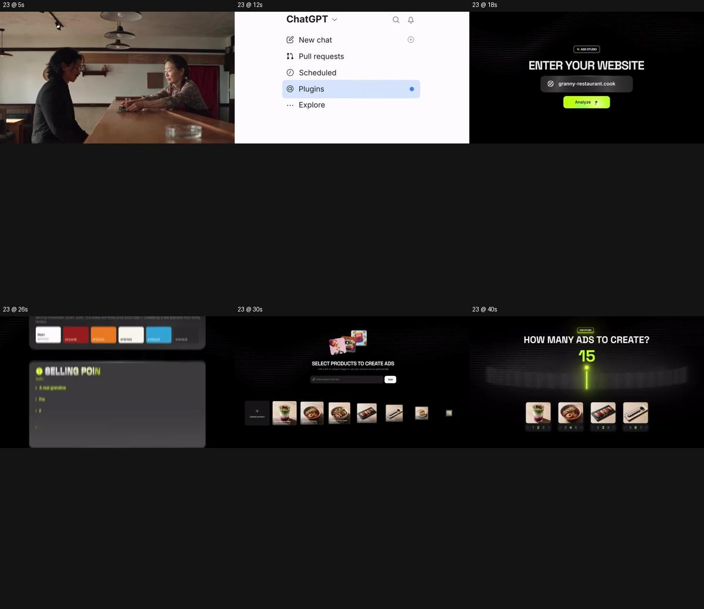
音轨供复核（未完成听审）
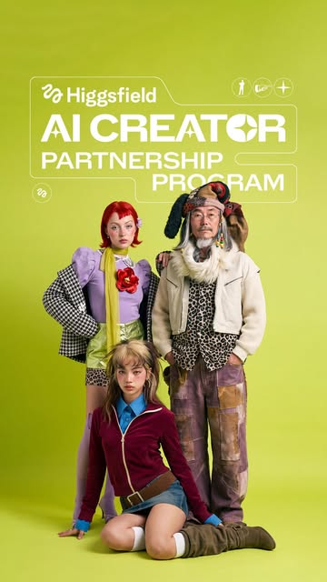
样本 24社群招募Creator Partnership
49.63 秒 · 1276 × 718 像素（取得的版本）
街头游戏血条开头，接三位性格鲜明的创作者群像和职业卡片。权益与人物动作结合，荧光色和玫红做信息强调。
观察位置：0–9 秒游戏情境；12–18 秒人物卡；26 秒申请；30–40 秒权益
打开 Instagram 原帖 ↗ 展开带时间点的分镜抽样
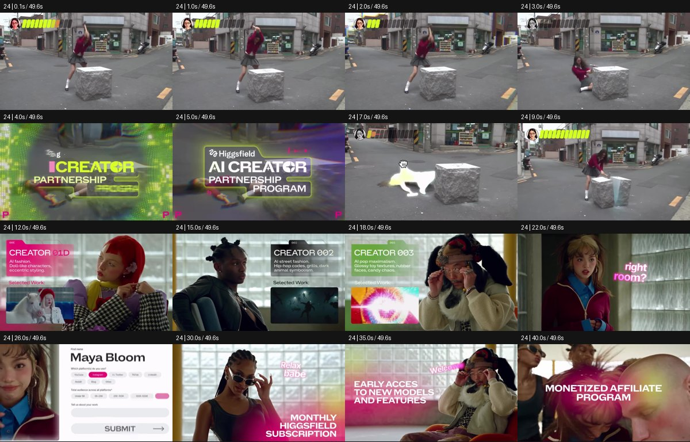
音轨供复核（未完成听审）
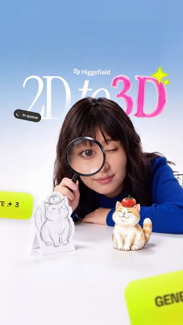
样本 25制作教程2D to 3D
29.17 秒 · 720 × 1280 像素（取得的版本）
创作桌、条纹上衣讲解者，接参考图、Blender、角色、绑定和动画；圆形人物画中画维持陪伴，同时给步骤让出主画面。
观察位置：0–3 秒开场；5–9 秒模型；14–20 秒讲解/绑定；28 秒 YouTube 导流
打开 Instagram 原帖 ↗ 展开带时间点的分镜抽样
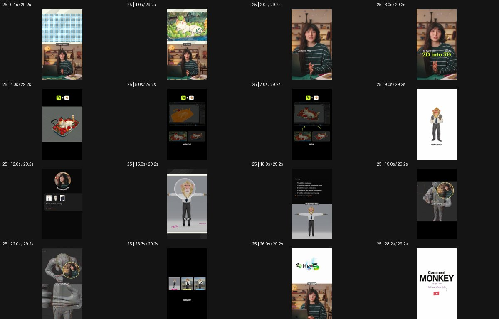
展开人物 / 界面细节
音轨供复核（未完成听审）
样本 26情境讲解AI Influencer 发布
78.54 秒 · 1276 × 718 像素（取得的版本）
雾中悬崖上的猫与夸张人物先制造戏剧动作，随后西装讲解者、运动场、风格菜单、角色输入和结果。几个角色跨场景复用。
观察位置：0–9 秒动作；12–26 秒讲解；35–50 秒参数；60 秒结果
打开 Instagram 原帖 ↗ 展开带时间点的分镜抽样
音轨供复核（未完成听审）
样本 27功能演示Ideogram 4.5
24.33 秒 · 1276 × 718 像素（取得的版本）
中世纪绘画角色保持队形，逐步转成写实人物、持饮料的乐队广告和户外广告牌。形式变化被组织成一条连贯的设计过程。
观察位置：0–5 秒绘画；7–9 秒写实；12–18 秒广告；22 秒户外应用
打开 Instagram 原帖 ↗ 展开带时间点的分镜抽样
样本 28功能演示FLUX 3 Image
22.33 秒 · 1276 × 718 像素（取得的版本）
同一女性从极简白房间中起身，UI 卡片指向室内不同对象，空间逐渐变为有生活痕迹的房间。固定主体便于看局部编辑。
观察位置：0–9 秒白房；12–15 秒卡片；18 秒完整室内结果
打开 Instagram 原帖 ↗ 展开带时间点的分镜抽样
音轨供复核（未完成听审）
样本 29情境讲解Paid Ads 餐车
74.80 秒 · 720 × 1280 像素（取得的版本）
餐车老板、食物、暮色环境和人物特写构成创业情境，之后才进入手机、对话、插件和批量广告。观众先认领问题再接受流程。
观察位置：0–15 秒人物与餐车；18–30 秒工具；35–50 秒人物/操作；60 秒批量结果
打开 Instagram 原帖 ↗ 展开带时间点的分镜抽样
音轨供复核（未完成听审）
样本 30功能发布Genjutsu Restyle
29.50 秒 · 1276 × 718 像素（取得的版本）
选择框落在人物与背景上，同一姿态在写实、动画、黏土等风格间对应。布局同时展示输入、输出和可选风格。
观察位置：0–2 秒选择框；7–9 秒对应；12–23 秒多种风格
打开 Instagram 原帖 ↗ 展开带时间点的分镜抽样
音轨供复核（未完成听审）
样本 31情境讲解Extension / Computer Use
75.50 秒 · 1916 × 1078 像素（取得的版本）
开头字标和 UI，随后短发、针织衫女性在厨房给出工作需求。文件、剪辑界面、操作进度和导出与冲咖啡等生活动作交替。
观察位置：0–9 秒入口；12–18 秒人物；25–35 秒文件/编辑；60 秒导出
打开 Instagram 原帖 ↗ 展开带时间点的分镜抽样
展开人物 / 界面细节
音轨供复核（未完成听审）
样本 32声音功能演示ElevenLabs v4
43.83 秒 · 1276 × 718 像素（取得的版本）
漂浮嘴唇开场；多位人物极近景与情绪脚本并置，文字明确标出轻声、笑、哭、愤怒等表演方式。这里只确认画面设计，未听审声音质量。
观察位置：0–5 秒嘴唇；7–12 秒男性；15–18 秒女性；22–40 秒多种情绪
打开 Instagram 原帖 ↗ 展开带时间点的分镜抽样
样本 33功能讲解Dots × Higgsfield
59.57 秒 · 1916 × 1078 像素（取得的版本）
彩色小角色承担研究、写作、分析等任务，真人需求之后，拟人图标在界面中带路。任务分工被转成视觉角色分工。
观察位置：0–3 秒图形；4–7 秒人物；9–22 秒任务；30–50 秒素材与应用
打开 Instagram 原帖 ↗ 展开带时间点的分镜抽样
音轨供复核（未完成听审）
样本 34权益发布Credits Reset
19.58 秒 · 1916 × 1078 像素（取得的版本）
城市中人物交谈、巨大绿色透明体、数字/点数图形与创作片段。权益更新也用一段情境开场，文字承担条件说明。
观察位置：0–4 秒城市；5 秒点数；7–12 秒作品；15 秒权益文字
打开 Instagram 原帖 ↗ 展开带时间点的分镜抽样
音轨供复核（未完成听审）
样本 35长篇叙事ANERNEQ
1200.00 秒 · 1916 × 1078 像素（取得的版本）
20 分钟北极题材电影。仅按代表时间点抽样，不属于短视频时长统计；封面以远景、雪地和原创电影字标建立电影身份。
观察位置：开场、2/3/4/5/6/8/10/12/14/16/18 分钟及结尾抽样
打开 Instagram 原帖 ↗ 展开带时间点的分镜抽样
音轨供复核（未完成听审）
样本 36制作教程Animation Pipeline
22.39 秒 · 720 × 1280 像素（取得的版本）
讲解者与成片上下分屏；再以相同构图的 Blender 预演和最终镜头作对照。低保真预演让制作路径有可检查的中间证据。
观察位置：0–3 秒主持；5 秒成片/预演；9 秒结果；15–18 秒同步对照
打开 Instagram 原帖 ↗ 展开带时间点的分镜抽样
展开人物 / 界面细节
音轨供复核（未完成听审）